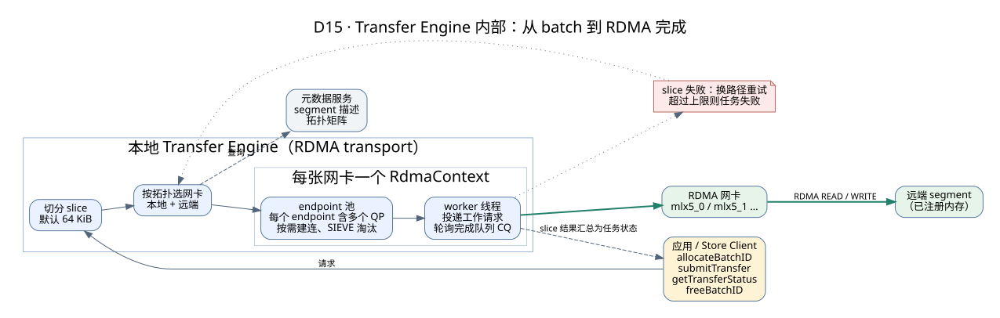

Mooncake Transfer Engine：字节移动的实现案例
返回传输主题 · Store 对象协议 · 实验
本篇介绍经典 Transfer Engine。先按传输主题理解一般问题，再把地址、注册、batch 和完成映射到这个实现。TENT 等其他实现分支需要单独核对接口与行为。
执行与资源生命周期
经典 TE 的概念流程：
initialize → 注册本地内存 → 发现/打开远端 segment
→ 分配 batch → 构建 READ/WRITE 请求 → 提交
→ 查询完成状态 → 释放 batch
→ 所有在途请求安全结束 → 注销内存 → 释放 buffer
Store 负责 key 语义，TE 面向地址、长度、segment 和操作，不知道 token、模型或前缀是什么。
RDMA 需要理解的名词
| 名词 | 作用 | 常见工程问题 |
|---|---|---|
| MR / registration | 将内存区注册给 NIC，建立访问权限/映射 | 注册成本、memlock、生命周期、注册缓存 |
| lkey / rkey | 本地/远端内存访问所需 key | 过期 descriptor、注销后的无效访问 |
| QP | 发送/接收工作请求的队列对 | 连接规模、队列深度、错误状态 |
| CQ / completion | 获取工作完成或错误 | 轮询 CPU、批完成、完成语义 |
| RDMA READ/WRITE | 直接操作已授权的远端内存 | 数据准备、接收方通知、同步和缓冲区保护 |
| GPUDirect RDMA | 在支持的硬件/驱动/拓扑上直接访问 GPU 内存 | PCIe 拓扑、驱动支持、GPU stream 可见性 |
单边 RDMA 减少远端 CPU 参与数据复制，但控制面、连接建立、注册、轮询、错误处理仍会消耗 CPU。RDMA 不是端到端应用一致性的替代品。
多网卡与 NUMA
TE 利用拓扑选择合适路径并把大请求切成 slices，从多个网卡搬运。收益受最窄环节限制：源/目的内存带宽、PCIe、NIC、交换网络、GPU copy、CPU 轮询和慢 rail。
“两张网卡”不必然获得两倍吞吐。跨 NUMA 读取、PCIe 根复用、共享上联、热点目标、过细 slices 或慢链路都可能限制扩展。
零拷贝的四个层次
- Python bytes 变成新对象的拷贝。
- 应用 buffer 与传输 staging buffer 的拷贝。
- 网络栈/远端 CPU 的数据复制。
- CPU↔GPU、layout conversion、压缩/解压的搬运。
put_from/get_into、已注册 buffer、RDMA、GDR 分别消除或减少其中某些环节。性能报告应画真实路径，而不是只写“零拷贝”。
深入：一次 batch 传输在 TE 内部怎么走
上面是接口层面的流程。下面打开 TE 内部，看一个请求怎样被切分、分到多张网卡、确认完成，以及出错时怎样重试。内容依据 Mooncake 学习版本的 Transfer Engine 设计文档 和 mooncake-transfer-engine/ 源码。

| 环节 | 具体做法 | 默认值（学习版本 config.h） | 为什么这样设计 |
|---|---|---|---|
| 切分 | 超过 64 KiB 的请求切成多个 slice，每个 slice 独立选路、独立完成 | slice_size = 65536，可用环境变量 MC_SLICE_SIZE 调整 | 让一个大请求同时用上多张网卡；slice 太小会增加提交和轮询开销 |
| 选路 | 每台机器生成拓扑矩阵并广播。按本地 buffer 所在的 CPU/GPU 选优先网卡，按远端目标内存的位置选远端网卡 | 可用 --auto_discovery 自动生成 | 避免数据绕过 CPU 之间的 UPI 或共享的 PCIe 交换芯片 |
| 连接 | “本地网卡—远端网卡”之间用一对 endpoint 表示，每个 endpoint 含若干 QP；第一次用到时才建连，放入连接池 | num_qp_per_ep = 2，max_ep_per_ctx = 65536 | 集群很大时不能两两预先建满连接；连接池满了按 SIEVE 算法淘汰 |
| 执行 | 每张网卡一个 RdmaContext，由 worker 线程投递工作请求并轮询完成队列 | workers_per_ctx = 2，num_cq_per_ctx = 1 | 投递和完成都在专门线程里做，应用线程不被阻塞 |
| 容错 | slice 失败时换一条可达路径重新提交；暂时避开出问题的网卡、上下文或完成队列；坏连接从两端连接池移除，下次再重建 | retry_cnt = 9（slice 重试上限相关配置） | 多网卡环境里常见的是某一张网卡暂时不可用，换路径往往就能成功 |
| 回收 | 被淘汰或删除的 endpoint 先进入等待列表，等它上面的在途 slice 全部结束后再异步回收 | 有约 1 Hz 的后台检查 | 直接销毁正在使用的 QP 会让在途传输出错 |
下面一步步演示一次 256 KiB 的写入，其中一个 slice 第一次失败、换路径后成功：
- 应用先申请一个 batch ID，后面的请求都挂在这个 batch 下。
- 提交一个传输请求：操作类型（READ/WRITE）、本地地址、远端 segment、远端偏移、长度。函数返回只代表“已提交”，不代表已完成。
- 超过 64 KiB 的请求被切成多个 slice（默认 64 KiB，可用 MC_SLICE_SIZE 调整）。根据集群广播的拓扑矩阵，为本地 buffer 所在的 CPU/GPU 选出优先的网卡，远端也按目标内存位置选网卡。
- 不同 slice 可以走不同的网卡，多张网卡一起工作。本地网卡和远端网卡之间的连接（endpoint，内含若干 QP）在第一次用到时才建立，连接数有上限，超出时按 SIEVE 算法淘汰。
- worker 线程轮询完成队列，逐个确认 slice 的结果。这里 S1 所走的路径出错了。
- TE 会为失败的 slice 换一条可达路径重新提交，并暂时避开有问题的网卡或连接；超过重试上限仍失败，整个任务就标记为失败。
- 所有 slice 都成功，任务才算完成。应用通过 getTransferStatus / getBatchTransferStatus 查到这个状态。
- 释放 batch。只有确认任务完成（或确认失败且不再有在途 slice）之后，应用才能复用或释放本地 buffer、注销内存。
面试要点：①“提交成功”“slice 完成”“任务完成”“上层对象可读”是四个不同的时刻；② 多网卡不一定线性加速——Mooncake README 公布的 8×400G 结果约 190 GB/s，只用到线速的一半左右（见公开数据）；③ 超时或失败后，必须等在途 slice 都结束才能释放本地 buffer，这和存储层的租约、上层的设备事件是不同层次的保护。
带着问题读源码和文档
| 入口 | 阅读问题 |
|---|---|
| 经典 TE 设计 | segment 怎样被发现？READ/WRITE 使用什么描述信息？ |
| TE Python API | 注册、提交与完成的接口前提、返回值和释放顺序是什么？ |
| TE 源码目录 | batch 与 slice 的状态如何汇总？错误怎样向上报告？ |
| benchmark 调优 | 对象大小、并发、拓扑和轮询怎样影响结果？ |
阅读时记录三个不同的资源：应用持有的 buffer、传输运行时管理的任务、上层 Store/Connector 的保护与发布状态。不要根据其中一个对象销毁或一个调用成功，就推断其他层已经完成。
验证方式
先完成字节校验和失败处理，再测稳态传输；分别记录是否包含注册、建连、host staging 和设备同步。与 Store 对象吞吐、推理 TTFT 对比时，明确新增的目录、分配和消费成本。实际步骤见传输与存储实验。